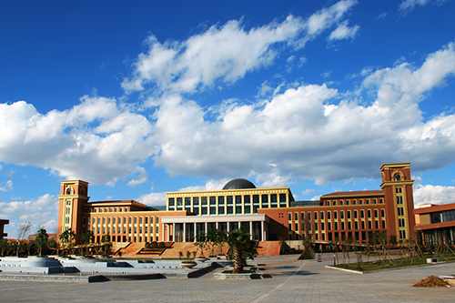

云南大学（Yunnan University），简称云大（YNU），原名私立东陆大学，始建于1922年12月，1934年更名为省立云南大学， 1938年改为国立云南大学，是我国西部边疆最早建立的综合性大学之一，1946年，《不列颠百科全书》将云南大学列为中国 15所世界著名大学之一，1949年径称“云南大学”，沿用至今。
云南大学是教育部与云南省省部共建的全国重点大学，中国首批211工程重点建设高校，2011计划，111计划，千人计划，卓越法律人才教育培养计划，卓越工程师教育培养计划，高等学校学科创新引智计划入选高校，中西部高校基础能力建设工程实施高校，中西部高校综合实力提升工程建设高校，中西部高校联盟的重要成员。